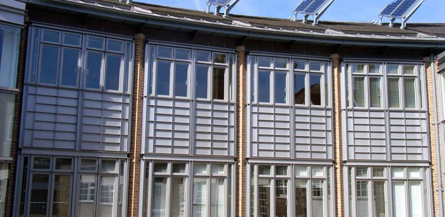

There is a substantial research programme exploring the dynamics of pressure and gravity driven flows of oil, gas and CO2 in porous rocks in the BP Institute. Research focusses on the role of temperature contrasts and the associated changes in buoyancy and rheology [Nigam and Woods (2005), Menand and Woods (2005)], as well as the effects of confining geometry [Mitchell and Woods (2006)] and reactions [Verdon and Woods (2007)]. Such effects may be key for predicting the patterns of dispersal of CO2 over tens to thousands of years following injection as part of sequestration projects. We have also been developing models of the role of buoyancy forces in suppressing mixing across density fronts, of relevance for modelling tracer dispersal [Menand and Woods (2005)]. Recently, attention has also focussed on the dynamics of gas drainage flows in layered porous rocks [Farcas and Woods (2007)] with a focus on the role of high permeability layers or fractures in enhancing the flow from low permeability zones, of relevance for the production of ‘tight gas’. We are also embarking on a new project to explore the processes of erosion of porous strata induced by flow.